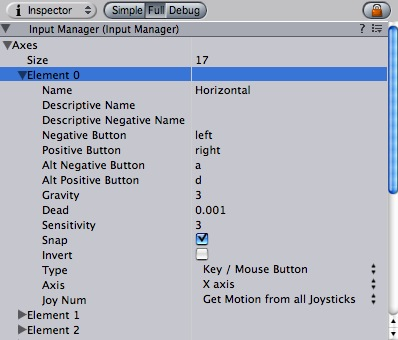
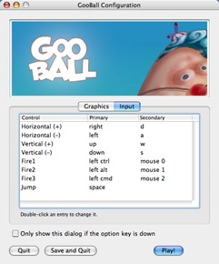

Previous
Previous
The Input Manager is where you define all the different input axes and game actions for your project.
|  |
The Input Manager Inspector
To see the Input Manager choose: Edit -> Project Settings -> Input
Properties
| Property: | Function: |
|---|---|
| Contains all the defined input axes for the current project. | |
| the number of different input axes in this project. | |
| The particular axis you are currently modifying. | |
| The string that refers to the axis in the game launcher and through scripting. | |
| A detailed definition of the Positive Button function that is displayed in the game launcher. | |
| A detailed definition of the Negative Button function that is displayed in the game launcher. | |
| The button that will send a negative value to the axis. | |
| The button that will send a positive value to the axis. | |
| The secondary button that will send a negative value to the axis. | |
| The secondary button that will send a positive value to the axis. | |
| How fast will the input recenter. Only used when the type is key / mouse button | |
| Any positive or negative values that are less than this number will register as zero. Useful for joysticks. | |
| For keyboard input, a larger value will result in faster response time. A lower value will be more smooth. For Mouse delta the value will scale the actual mouse delta. | |
| If enabled, the axis value will be immediately reset to zero after it receives opposite inputs. Only used when the type is key / mouse button | |
| If enabled, the positive buttons will send negative values to the axis, and vice versa. | |
| Use Key / Mouse Button for any kind of buttons, Mouse Movement for mouse delta and scrollwheels, Joystick axis for analog joystick axes and Window movement for when the user shakes the window. | |
| Axis of input from the device (joystick, mouse, gamepad, etc.) | |
| Which joystick should be used. By default this is set to retrieve the input from all joysticks. This is only used for input axes and not buttons. |
Details
All the axes that you set up in the Input Manager serve two purposes:
- They allow you to reference your inputs by axis name in scripting
- They allow the players of your game to customize the controls to their liking
All defined axes will be presented to the player in the game launcher, where they will see its name, detailed description, and default buttons. From here, they will have the option to change any of the buttons defined in the axes. Therefore, it is best to write your scripts making use of axes instead of individual buttons, as the player may want to customize the buttons for your game.
|  |
The game launcher input window that is displayed when your built game is run
See also: Input
Hints
- Axes are not the best place to define "hidden" or secret functions, as they will be displayed very clearly to the player in the game launcher.